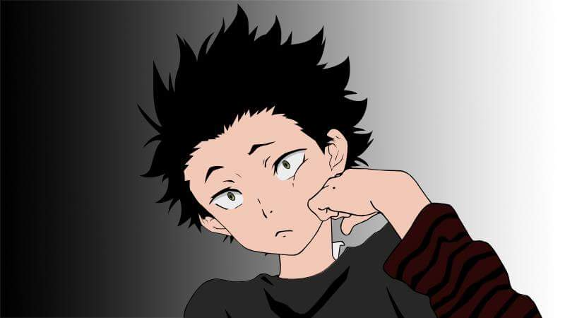

Gallery
Hinata Shoyo(HAIKYUU)
Junior high school student Shōyō Hinata gains a sudden love of volleyball after seeing a national championship match on TV. Although short in height, he becomes determined to follow in the footsteps of the championship's star player, nicknamed the "Little Giant", after seeing his plays. He creates a volleyball club and begins practicing by himself. Eventually 3 other members join the team by his last year of middle school, pushing Hinata to persuade his two friends who are in different clubs to join just for the tournament. However, they are defeated in their first tournament game after being challenged by the championship favorite team, which includes the so-called "King of the Court" Tobio Kageyama, in the first round. Though Hinata's team suffers a miserable defeat, he vows to eventually surpass Kageyama and defeat him. Fast-forward to highschool, Hinata enters Karasuno Highschool with the hopes of joining their volleyball club. Unfortunately for him, the very person he swore to surpass appears before him as one of his new teammates. At first Hinata and Kageyama are unable to work together, causing the team captain to kick them out of the club. The two decide to challenge the elder members of the team to a match, hoping that if they win they will prove they can work together and be allowed to rejoin. The team captain accepts the challenge, and working with another member of the team, Hinata and Kageyama win the match and are let back into the club. By combining the genius-like qualities of Kageyama with Hinata's sheer athleticism, the duo create an invincible brand-new volleyball tactic. Their new combo allows them to get over their differences and creates a strange alliance between the two filled with fun and laughter for them and their teammates. Thus begins the Karasuno boys' volleyball team's journey to the top.
Shoya Ishida(A SILENT VOICE)

Shōya Ishida walks along a bridge, contemplating suicide. He flashbacks to his elementary school days when his teacher introduces a new student, Shōko Nishimiya, who is deaf. Irritated by his inability to understand Shōko, Shōya begins bullying and harassing her, making fun of her disability, and even tossing her hearing aids out the window. Shōko tries to befriend her classmates but Naoko Ueno leads the other girls to rebuff her. The teachers and Shōya's friends do not intervene in his bullying of Shōko despite being witnesses. One day, Shōya yanks out Shōko's hearing aids, making her ear bleed. After this incident, the school principal asks if Shōko is being bullied. Shōya's teacher demands Shōya to stand up, knowing he is guilt mother, Miyako Ishida, takes Shōya to the Nishimiyas and apologizes, and Shōya feels guilty when he sees the amount of money his mom gives to pay for the cost of all the hearing aids (1,700,000 yen). Shōko transfers to another school and Shōya's friends turn on him, making him an outcast y. When Shōya points to his friends as accomplices, they deny it. Shōya's
Staz(BLOOD LAD)

Staz is one of the territory bosses of Demon World East. Although he is the descendant of the noble vampire Dracula who would go to the human world to suck blood, he shows no interest in the vampire lifestyle, preferring to indulge himself in Japanese culture and media. For secondary vampire characteristics, he does not fly or have bat wings, he can eat garlic, he is not susceptible to crosses, and he heals rapidly. He is immediately attracted to Fuyumi, but when she is killed and becomes a ghost, he makes it his mission to bring her back to life. He struggles with his feelings about her, whether it is his desire to suck her dry as a mummy or whether it could be something romantic. In the human world, he carries a spray bottle of his spit that allows him to manipulate the memories of the humans there. He can also revive Fuyumi by giving her some of his blood. He describes his abilities as radiating with a range of up to tens of meters. When he was younger, his brother Braz sealed his full potential power by shooting him with a special bullet. This was because he was unable to handle his power and would collapse in a nose bleed after using the power. He is later freed from the restriction
Rikka Takanashi(CHUUNIBYOU DEMO KOI GA SHITAI!)
Rikka is the female protagonist of the story, a girl in the same class as Yūta who moved in with her older sister who lives above Yūta's apartment. She is an intensely delusional girl who believes herself to possess a "Wicked Eye" (邪王真眼 Jaō Shingan, lit. True Eye of the Evil King) and as such always wears a medical patch over her right eye and bandages around her left arm, though she has no injuries to either. Despite being quite attached to Yūta, she is cautious of strangers and adopts a battle pose whenever she meets someone for the first time. Her fantasy weapon of choice is a frilly parasol which she wields as a sword. For her delusional operations, she often dresses in a mostly-black gothic dress. To school, she always wears her trademark long black knee socks, paired with novelty sneakers with in-built wheels. She is also rather clumsy, often tripping over and forgetting things. The origin of her delusions came from Yūta himself, when she saw Yūta in his delusional phase at the balcony above Yūta's apartment. They eventually become close and develop feelings for one another and start dating, but Rikka's delusions appear to keep their relationship from progressing.